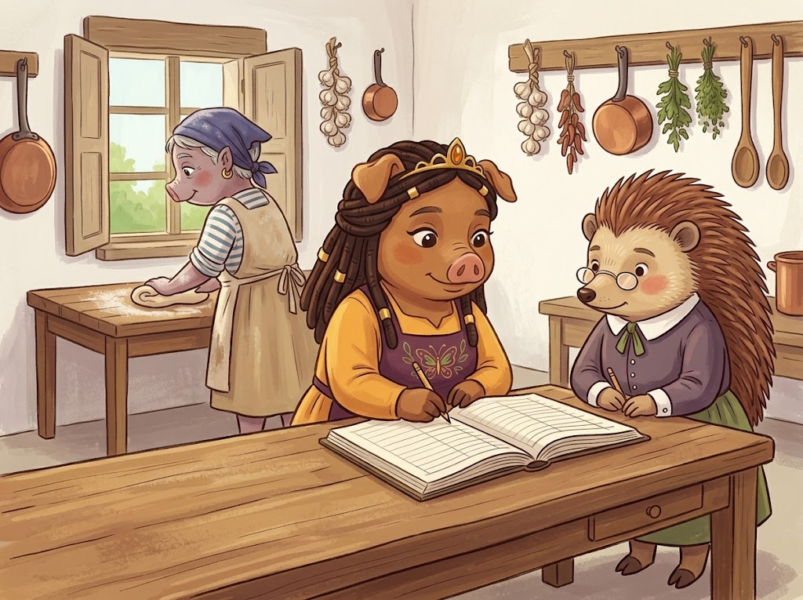
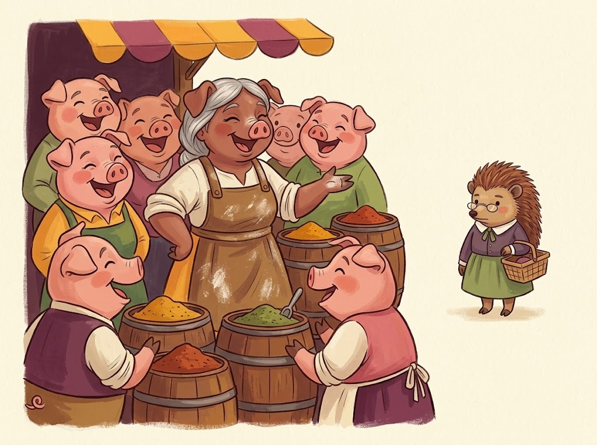
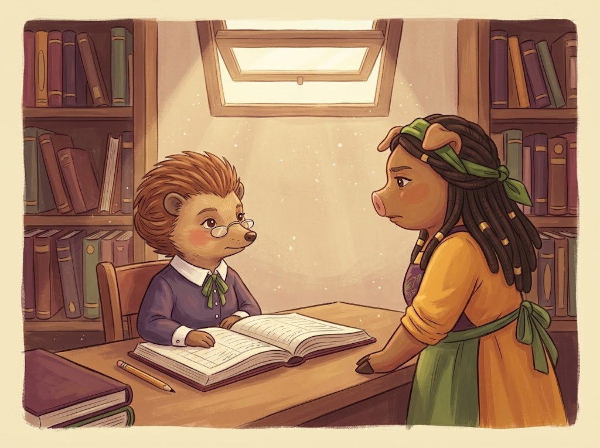
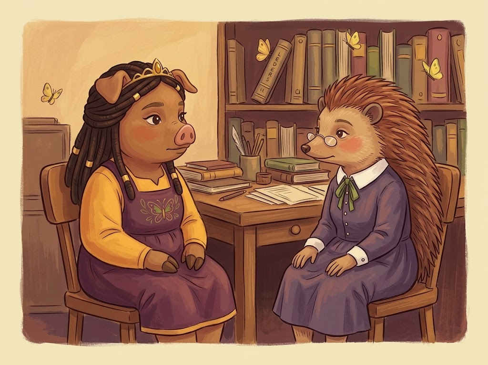

Fair Week ended on a Sunday, and by Monday the kingdom had the particular flatness of a place that has been on its best behaviour for eleven days and would now like to lie down.
Beatrix Hollyhock’s big oven was still cracked up the back wall. Gus Thornapple had said three weeks in the voice he keeps for five.
So when a stranger came up the one good road on Tuesday towing a barrel-shaped clay oven on a handcart — domed, sooted, still faintly warm from wherever she had slept — Pigglyvale did not so much greet her as inhale.
“Vega,” she said, to nobody in particular, setting the handles down on the cobbles. “Marisol. I bake.”
She was tall and rangy and about fifty, silver at her temples under an indigo headwrap, with the forearms of somebody who has been doing one thing for a very long time. By ten she had the fire drawing. By half past there were eleven loaves of pan sobao on a board, split and shining with lard, and the smell went up Marketrow like a rumour.
Thomas came down at eleven to record her arrival, on the grounds that a baker arriving in a week without a baker was a matter of state. He came back at ten past.
“Majesty,” he said, arranging himself in the kitchen doorway, which he filled the way a cork fills a bottle. “She is one of us.”
“You met her four minutes ago.”
“I met her sufficiently.” The wing tip came out and splayed into its rough point, which is the nearest Thomas has to a raised finger. “One recognises the sort who has been welcomed everywhere because she earned it everywhere.”
Carolyn, elbow-deep in a bowl of soaked pigeon peas, thought this was funny at the time.

By Thursday Marisol Vega was at the long scrubbed worktable with her sleeves rolled and her own scraper in her hand, and Carolyn had given her the good hearth, the cold larder, and the key that hangs by the door.
It was not a hard decision, and that is worth saying plainly. Beatrix had a fair-week backlog and no oven; Marisol had an oven and forty years of bread; the kingdom ate. Anyone would have done it. Carolyn simply did it faster, and enjoyed it more, and stood in her kitchen at the end of the first day laughing at a story about a burnt wedding cake six ridges over, and thought: oh, good. Somebody easy.
Miss Delphine Quill arrived at four with the register under her arm and her pencil already out. “A person not on the household roll is using the Kitchen Royal,” she said. “Under whose authority.”
“Mine, Delphine.”
“Very well.” She wrote it down and said nothing else, because Miss Quill has never in her life said a thing that did not need saying.
The quarterly came next morning and took forty minutes, as it does. Carolyn sat at the end of the worktable with a mug going cold and initialled her way down the columns: stores in, stores out, road and repairs, lamp oil, the fair account, the levy nobody pays because there is nothing to levy.
And then the seventh column, which has no heading, and which Carolyn has been putting her initials beside for twenty years without once asking what it is.
The bread order ran late, and by eleven the Kitchen Royal looked as though a small weather event had happened in it. Marisol had her boots off and her feet on the fender, doing an impression of a man in Snouton who once tried to pay her in ducks, and Carolyn laughed until she had to put a hand on the table.
“Oh,” she said, when she had it back. “That is the first time I have laughed properly in a fortnight.”
“Fair Week.”
“Fair Week, and the quarterly, and—” She stopped, and then did not stop, because it was late and she was tired and here at last was somebody who wanted nothing from her. “Some days I would give anything for one person here who didn’t need me to be delighted about their columns.”
It was not a cruel sentence, and it was not an untrue one. It was the unfinished version of herself, said out loud at eleven at night to somebody she had known since Tuesday.
Marisol laughed, and topped up the coffee, and thought no more about it at all.
Two days later she told it at Marketrow.
She told it warmly. That has to be understood or the whole thing goes wrong. She was at Gus Thornapple’s barrels with half the row around her, being funny about the Princess the way you are funny about somebody you have decided to love, and doing what anybody does in a new place: proving she had been let in.
“— and she says to me, eleven at night, she says, some days I would give anything for one person here who didn’t need me to be delighted about their columns—”
Marketrow laughed, because it was funny.
Miss Quill was four feet away, on the other side of the barrels, with a basket of allspice and a list.
Gus saw her hear it. Gus sees everything nine seconds before anybody else and mentions it a week late, and this was no exception; he watched her turn and go up the row very straight and very fast, thought well, that is not good, and went back to his barrels.

Nothing happened for a day. Then everything did, and all of it was legal.
On Monday the lamp oil for the Long Table lanterns, which for twenty years had gone out of the common store on the Princess’s word, required a signed docket in advance. On Tuesday the flour drawn against the fair account came back with a note explaining, correctly, that the account had closed on the last Sunday of Fair Week. On Wednesday Her Majesty was informed in writing that a person not on the household roll might use the Kitchen Royal only under a countersigned grant, and that a grant required seven days’ notice.
Marisol’s oven went cold that afternoon. Beatrix’s was still cracked. On Thursday there was no bread in Pigglyvale at all, for the first time in anybody’s memory, and two hundred souls discovered they had opinions about bread.
Every one of those decisions was correct. That is what nobody could get hold of. No rule bent, no spite written down, nothing to point at and call unfair. Miss Quill had simply stopped doing the thing she had done unasked for twenty years, which was to quietly let her Princess through.
Carolyn went to the records room on Thursday with three weeks of Fair Week behind her and no sleep in her, and she was sharp.
“Seven days.”
“Seven days, Majesty.”
“Delphine, there are people who cannot get a loaf.”
“There are.” Miss Quill did not look up. The pencil went on down the page, very even. “It is a poor rule. I have said so twice, in writing, in the years you have been signing it.”
“Then bend it. You have bent it for me every week of my life, and now, on the one week the whole kingdom needs—” and she heard her own voice going up and did not stop it, which is the part she thought about afterwards. “What is this for?”
Miss Quill set the pencil down and squared it to the edge of the page.
“You will have your grant on Wednesday,” she said. “I am sure you can be delighted about it by then.”
The clock in the records room is loud. Carolyn had never noticed that before.
She stood there and did the arithmetic, and it took four seconds. She heard it. Somewhere I did not say it — which means I said it to somebody, and I said it about her, and I have spent ten minutes explaining to a woman I hurt that she is being unreasonable.
“Delphine.”
“The office closes at five, Majesty.”
“Delphine, please. Sit down.”

It took a while. Miss Quill sat the way a person sits when they are not sure the chair is meant for them: on the front third of it, spines up, both hands flat on her knees.
“I said something about you to a woman I had known four days,” she said. “I said it in my own kitchen at eleven at night and I meant it, which is worse, not better. I gave a stranger something that belonged to you — twenty years of you, and how tired I am, and the version of me that only comes out late — and then I let you find out at Marketrow, behind a barrel, from somebody who did not know she was carrying it.”
She did not say I was exhausted. She had it ready, and she left it where it was.
“It was not a slip. It is the shape of how I have been doing this. I hand things over fast when somebody is easy to be around, and I have been giving you the slow version for two decades and calling it respect. So here is what I will do instead. I will bring the hard part of my week to the person who has actually been carrying it. And if I have not got the patience for your columns on a Thursday, I will say so to you, on Thursday, in words, and we will sort it out between us.”
Miss Quill looked at the desk for a long moment.
“Twenty years,” she said, “and nobody has ever asked me to sit down.”
Three yellow butterflies came in over the window ledge, which is always open in that room because of the ink. One went along the top of the shelf and settled on the spine of a ledger from a year before either of them was in the room, and stayed.
Neither of them said anything about it.

“I should like,” said Miss Quill at last, in the voice she uses for reading out the stores, “to record an irregularity.”
“Delphine—”
“The docket. The fair account. The grant rule at full length. All three were within the book.” Her spines had gone down flat. “And I decided all three on the Friday afternoon, in the same hour, in advance. That is not keeping the rules. That is using them. I have never done it before, I did it to you, and there is no column for it.”
She stopped. She was not good at it. She had built the whole thing in her head on the walk over and it had come out flat and in the wrong order, the way a first one does.
“I am sorry,” she said. “That is the plain sentence. I could not find a better one.”
“It is the right one,” said Carolyn. “I take it. It is done.”
Here is what did not happen next.
Carolyn did not make Miss Quill Keeper of Anything, and did not stand her up at the Long Table to say a warm thing about her in front of two hundred people — the easiest fifteen seconds of the week, and one Miss Quill would have survived roughly the way a hedgehog survives a surprise party.
And Marisol Vega did not leave. She got her grant on the Wednesday, entirely in order, then looked at the numbers and set the clay oven up at the top of Marketrow instead, three stalls along from Gus. She still comes to the Kitchen Royal twice a week and is still the funniest person in it. She does not know that anything ever happened, which is not the sort of thing you tell somebody who did nothing wrong.
What happened was the Long Table on the Friday, lit off a docket signed the previous Tuesday. Bruno arrived towing the cart, which now said MARROW & DAUGHTERS in fresh paint, and when asked which daughters, said it was a long game. Thomas took his own small table at the end, on the grounds that he takes up the space of three. There was pan sobao still warm, rice with pigeon peas, and greens with enough pot likker to be worth a second piece of bread.
Carolyn brought a plate down to the end of the bench where Miss Quill sat with her jacket still buttoned to the throat, and sat down beside her.
“Delphine. I have a problem and I want your judgement on it, not your ruling. The grant rule is bad and we have both known it for years. Would you write me a better one? Properly — yours, not mine, and I will sign whatever you bring me.”
Miss Quill was quiet for a second.
“It will want a month,” she said.
“Take two.”
“It will not want two.”
“No,” said Carolyn. “I did not think it would.” And then, because it had been sitting in her since Friday: “The seventh column. The one with no heading. I have been initialling it since I was nineteen and I have never asked what it is.”
“No,” agreed Miss Quill. “Nobody has.”
She had the book with her, because she always has the book with her. She turned it round on the boards, put one finger at the top of the column, and Carolyn read down it in the lantern light.
It was names. Just names, in Miss Quill’s small upright hand, each with a date beside it, and beside a good many of them a second date further along, and beside a very few of them nothing at all.
“Who was last at the Long Table, and when,” said Miss Quill. “The second date is when they came back. It is not an official column. I have never billed anyone for it.”
Carolyn did not say anything for a while.
At the top of the current page, in the same small hand, was Hollyhock, B., and a date six weeks back, and no second date beside it at all.
“Her oven,” said Carolyn.
“Her oven,” said Miss Quill.
Carolyn stood up and picked up a plate and filled it, and then stood there holding it, because it was a fifteen-minute walk to the bakery in the dark and she had no intention of doing it alone.
“Come with me,” she said.
Miss Quill got up, and buttoned a button that was already buttoned, and came.